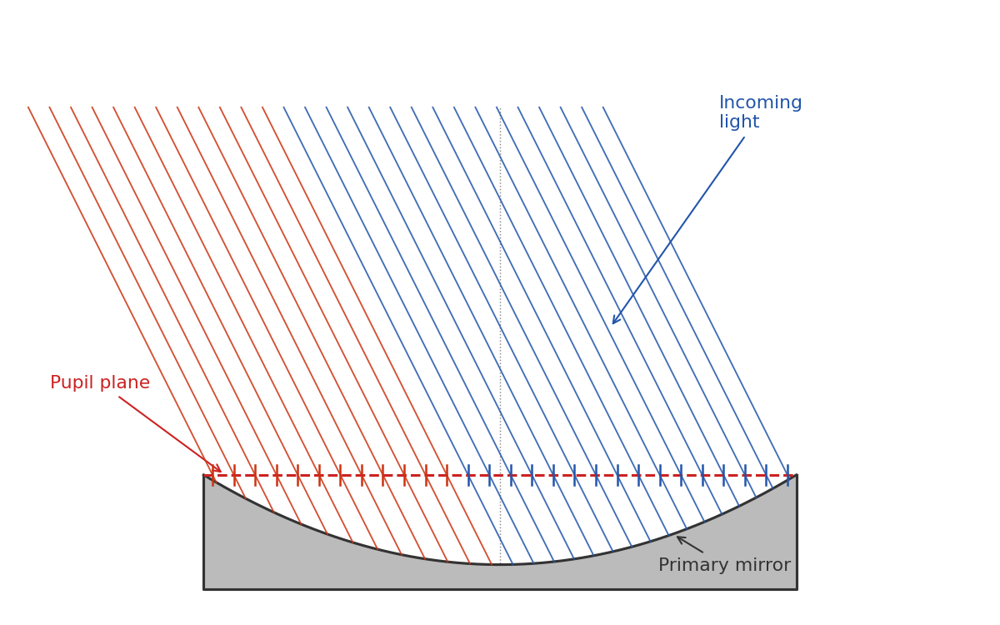
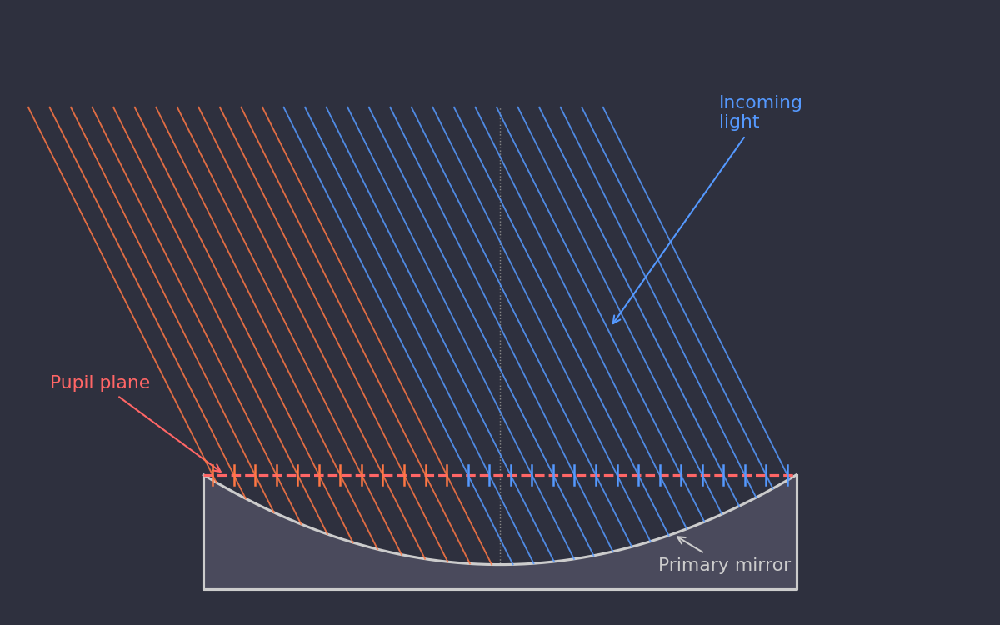
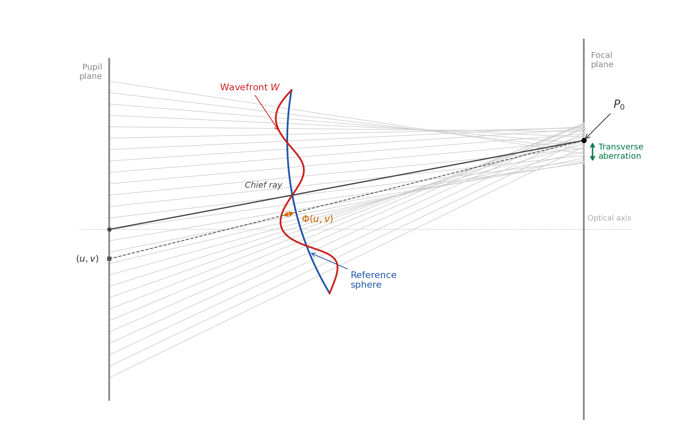
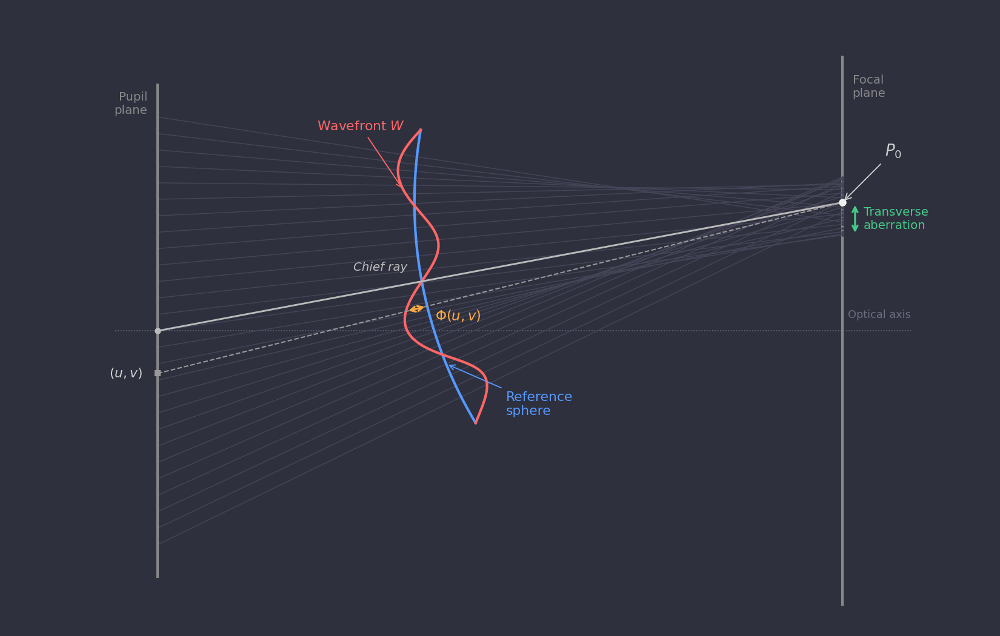
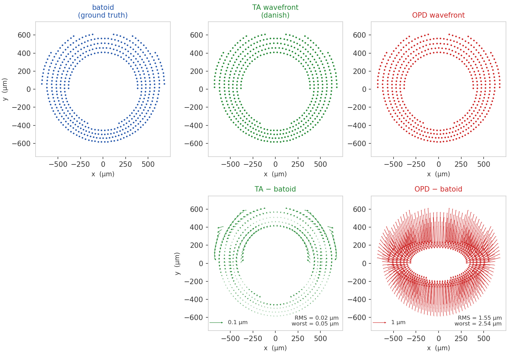
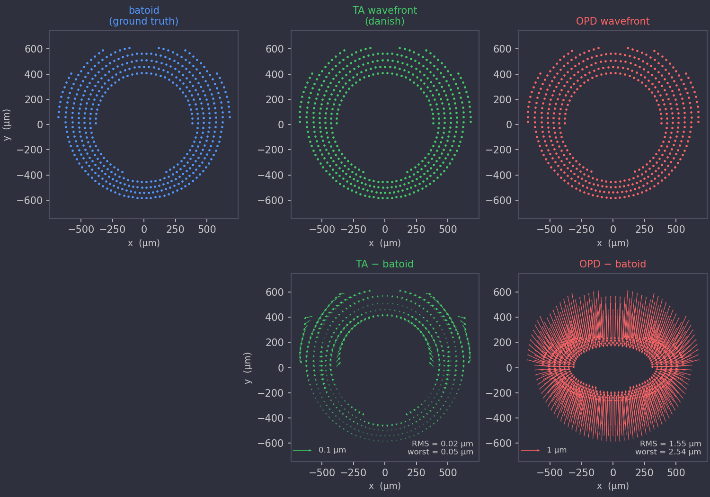
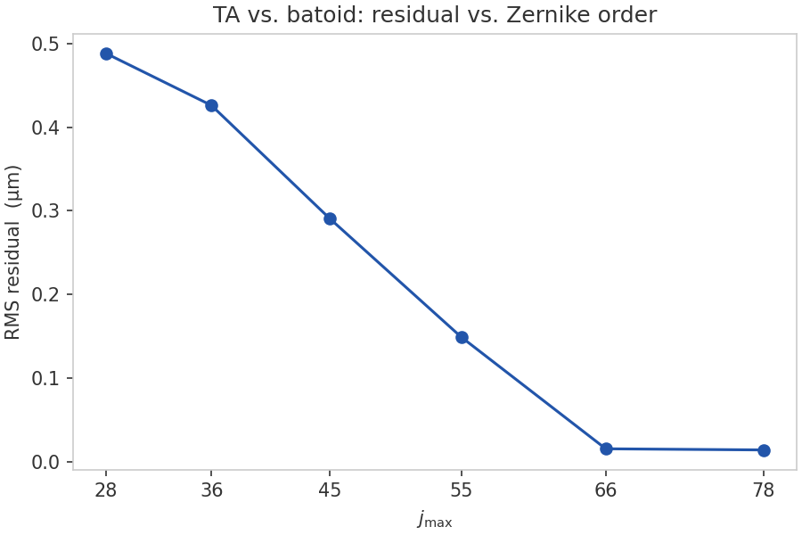
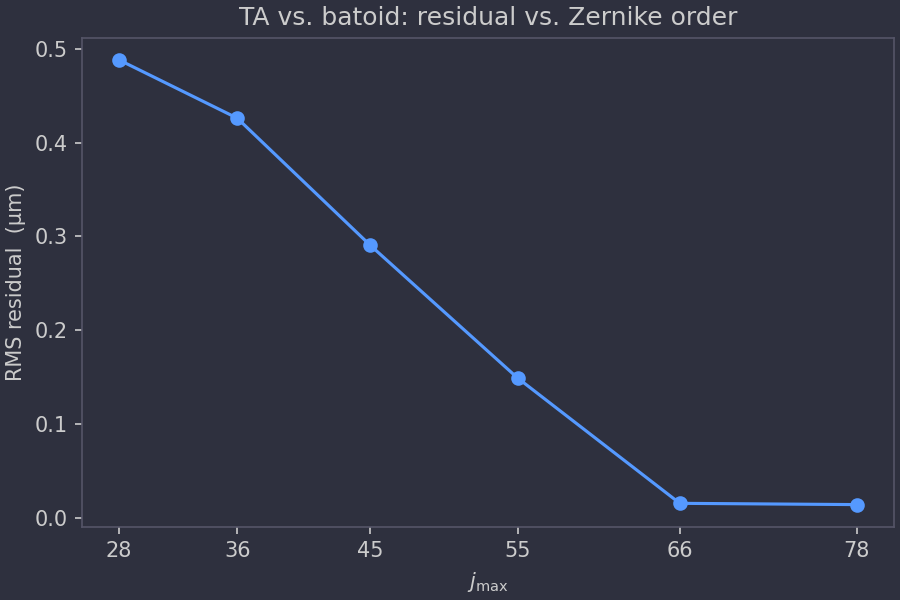

Model Description¶
This section describes the mathematical foundations of the danish geometric donut model.
Pupil-to-focal mapping¶
The pupil plane¶
For a wide-field astronomical telescope — such as the Vera C. Rubin Observatory Simonyi Survey Telescope — the entrance pupil is the plane that coincides with the rim of the primary mirror. Note that this is distinct from the curved mirror surface itself. The distinction matters: an incoming parallel beam of photons (from a distant star) uniformly samples a flat plane, but does not uniformly sample the curved mirror surface.


Note that we parameterize the wavefront over the entrance pupil rather than the exit pupil. The exit pupil is defined as the image of the entrance pupil through the optical system. For a paraxial system it is a well-defined plane, but in a wide-field telescope the exit pupil location shifts with field angle, so it is better thought of as an approximately-located surface than a precise plane. The entrance pupil, by contrast, is exactly the flat plane at the mirror rim, and is the natural domain for describing which parts of the aperture contribute light to a given image and how each part produces optical aberrations. From here on, whenever we say pupil plane we specifically mean the entrance pupil plane.
We use Cartesian coordinates \((u, v)\) in the pupil plane, with the origin at the optical axis. The annular aperture of the telescope spans \(R_\text{inner} \le \sqrt{u^2+v^2} \le R_\text{outer}\).
Mapping to the focal plane¶
The fundamental conceit of danish is that we can form an efficient map between the pupil plane and the focal plane by defining a scalar function called the transverse aberration wavefront \(W(u, v)\), which has dimensions of length. Without performing any explicit reflection or refraction calculations, this function encodes the full effect of the telescope optics: for a ray entering the pupil at \((u, v)\), the corresponding position in the focal plane is
where \(f\) is the telescope focal length. This defines the function
danish.pupil_to_focal. The inverse
transformation — from a focal-plane position back to the pupil — is
computed via Newton–Raphson iteration by
danish.focal_to_pupil.
In practice, the tip and tilt Zernike terms (\(Z_2\) and \(Z_3\)) are held at zero. These terms shift the focal-plane position of the star without changing its shape, which is instead accounted for by working in focal-plane coordinates centered on the star or donut of interest.
Wavefront convention¶
The wavefront \(W(u, v)\) used by danish is the transverse aberration (TA) wavefront. This is a different quantity from the optical path difference (OPD) wavefront \(\Phi(u, v)\) that is more common in the optics literature (e.g., Zemax output).
The OPD \(\Phi(u,v)\) is defined as the optical path difference between the ray through pupil point \((u, v)\) and a reference ray, measured as the reference ray traverses a reference sphere. The sphere is centered on \(P_0\) — the point where the reference ray intersects the focal plane — with radius equal to the exit-pupil-to-focal-plane distance. We use the chief ray (the ray through the centre of the pupil) as the reference ray. In practice the computed wavefront is insensitive to the exact value of the reference sphere radius.


The TA wavefront \(W(u,v)\) is instead defined precisely such that equation \(\eqref{eq:pupil-to-focal}\) gives the correct focal-plane position for the ray through \((u,v)\). If the OPD \(\Phi\) were substituted in place of \(W\), the predicted spot positions would be less accurate. The figure below illustrates the difference for a representative LSST intra-focal donut with field angle (1.75°): the top row shows spot diagrams from batoid raytracing, the TA wavefront approach, and the OPD approach; the bottom row shows the residuals of each prediction relative to batoid. The TA wavefront achieves an RMS spot accuracy of 0.02 µm, compared to 1.55 µm for the OPD wavefront.


The TA wavefront coefficients can be computed from a batoid telescope
model using batoid.zernikeTA().
Axial position, defocus, and caustics¶
The wavefront \(W(u,v)\) encodes not just the optical aberrations of the telescope but also the axial position of the focal plane. When the detector (or the entire camera) is pistoned along the optical axis away from the nominal focus, the \(Z_4\) (defocus) coefficient of \(W\) acquires a large value, and other Zernike coefficients are also affected. This intentional defocusing is what creates the characteristic donut shape: rays from the pupil annulus are spread over a large area on the detector rather than converging to a point.
The forward transformation \(\eqref{eq:pupil-to-focal}\) is defined for
any wavefront \(W\), regardless of the axial position. The inverse
transformation danish.focal_to_pupil
is only well-defined when the mapping is injective — that is, when each
focal-plane point is reached by exactly one pupil ray. Near focus the
mapping folds over itself and the inverse becomes multi-valued; the
boundary of this breakdown is a caustic. The
danish.DonutFactory.is_caustic
method checks for caustics for a given wavefront.
The surface-brightness model of the following section is likewise only meaningful in the caustic-free regime: the Hessian determinant changes sign at a caustic, indicating that the locally linearized area element has collapsed to zero.
Surface-brightness model¶
The illumination at a focal-plane pixel is proportional to the area of the pupil annulus that maps onto that pixel. The surface brightness scales as the inverse determinant of the Jacobian of the pupil-to-focal map,
where \(\mathbf{H}\) is the Hessian determinant of the wavefront, and subscripts on \(W\) denote second partial derivatives.
Pixel values are computed by multiplying this surface brightness by the fraction of each pixel's area that falls within the field-angle dependent vignetting mask. This sub-pixel calculation assumes uniform illumination within each pixel and simply scales the flux by the computed enclosed area.
Spot diagrams¶
For in-focus stellar images the surface-brightness model above is not applicable — the mapping is near a caustic and the Hessian determinant cannot be used to assign pixel fluxes. Instead, danish models in-focus PSFs via spot diagrams: a hexapolar grid of rays is sampled across the pupil annulus and each ray is projected to the focal plane using only the forward transformation \(\eqref{eq:pupil-to-focal}\). No inverse is required.
The resulting cloud of focal-plane points approximates the geometric
PSF. danish.DonutFactory.spots
returns the focal-plane coordinates and weights of these rays;
danish.DonutFactory.spot_image
renders them onto a pixel grid by convolving with a Gaussian quadrature
kernel that accounts for the atmospheric PSF.
Wavefront parameterization¶
The wavefront \(W(u,v)\) is expanded in annular Zernike polynomials,
where \(R = R_\text{outer}\) is the normalization radius. The fitting parameterization — including multi-sensor double Zernike expansions and sensitivity matrices — is described in Fitting details.
Zernike truncation order for LSST¶
The number of terms retained in the expansion controls how accurately the TA wavefront reproduces full raytracing. The figure below shows the RMS residual between the TA prediction and batoid ground truth as a function of \(j_\text{max}\), evaluated at a number of truncation orders from \(j=28\) to \(j=78\) for a representative LSST field angle of 1.75°. The residual falls sharply at \(j_\text{max}=66\) before improving only negligibly at \(j_\text{max}=78\). For modeling LSST donuts, a good choice for the maximum Noll index is 66.

